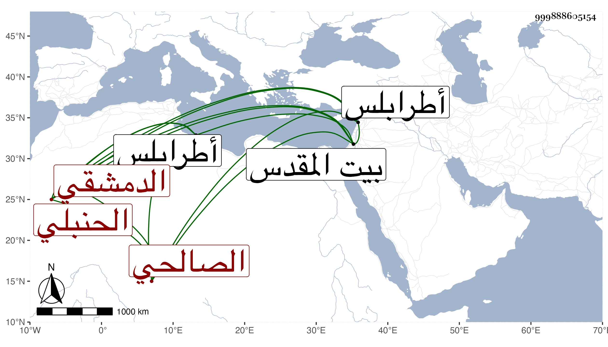

0902Sakhawi.DawLamic.ITO20230111-ara1.EIS1600.999888605154
Biography ID: 999888605154
83
أبو بكر بن داود التقى أبو الصفا الدمشقي الصالحي الحنبلي والد عبد الرحمن الماضي ويعرف بابن داود صحب جماعة منهم الشهاب أحمد بن العلاء أبي الحسن علي ابن محمد الأرموي الصالحي ولقي بأخرة الشهاب بن الناصح والبسطامي وحج وزار بيت المقدس وصنف أدب المريد والمراد سمعه منه ولده بطرابلس سنة خمس وثمانمائة وتسلك به غير واحد وأنشأ زاوية حسنة بالسفح فوق جامع الحنابلة وتؤثر عنه كرامات فيحكى أنه دخل وابنه معه كنيسة يهود بجوبر في يوم سبت وعلى منبره خمسة رجال من اليهود فقال الشيخ أبو بكر لا إله إلا الله فانهدم بهم المنبر وسجدوا بأجمعهم كل ذلك مع إلمامه بالعلم وإتباعه للسنة . مات في سابع عشري رمضان سنة ست رحمه الله وإيانا .
